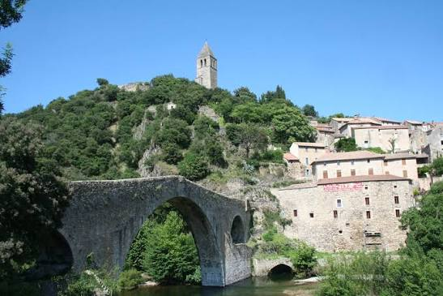
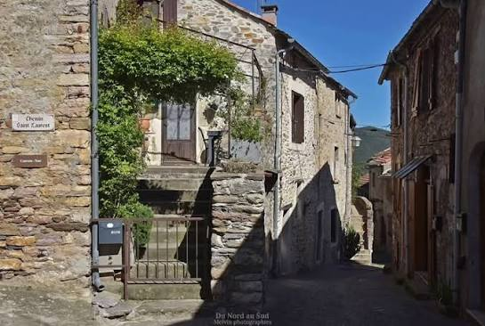

Bâti sur une butte rocheuse qu'enserre une boucle du Jaur, au pied du massif de l'Espinouse, Olargues semble avoir défié les siècles. Ses origines remontent à l'Antiquité et le village connaît les empreintes successives des Romains, des Vandales puis des Wisigoths, avant de s'épanouir véritablement au Moyen Âge : dès l'origine, le piton rocheux résiste aux eaux du Jaur et les force à le contourner, offrant un site naturellement défendable. Dès 1127, les seigneurs d'Olargues s'implantent sur ce promontoire, autour duquel s'organise un premier village fait de « caves », de ruelles et de placettes creusées à même le rocher : la configuration défensive du site en dicte tout l'urbanisme.

Le Pont du Diable et le village d'Olargues, dominé par sa tour-clocher
Ce n'est qu'au XIIe siècle que fut bâti le château-fort d'Olargues, son castrum, complété au XIIIe siècle par les fortifications de la ville. Il ne reste aujourd'hui de ces remparts que deux portes, la porte du Baux et la porte Neuve. Sur ordre de Richelieu, au XVIIe siècle, le castrum est rasé et ruiné ; seul son donjon médiéval est épargné, remanié pour devenir le clocher de l'église actuelle, devenu depuis le symbole du village. Ce sont surtout ses ruelles pavées de galets du Jaur, ses passages voûtés et ses maisons à colombages des XIIIe, XVe et XVIe siècles qui font aujourd'hui la renommée du village.
De son pont roman du XIIe siècle jusqu'à sa tour-clocher, en passant par ses ruelles pavées si étroites que les toits semblent parfois se toucher, Olargues a su conserver, mieux que beaucoup, l'aspect d'une véritable cité médiévale. Cette authenticité lui vaut d'être classé parmi « Les Plus Beaux Villages de France » depuis 1992. Aujourd'hui, ses quelque 650 habitants vivent au rythme des saisons, entre viticulture, châtaigneraie et tourisme, dans un village qui semble n'avoir pas bougé depuis le Moyen Âge.
🌉
Visite pratique

Les ruelles du village perché
⏱️
Durée
Environ 1h30 à 2h de visite
📊
Difficulté
Modérée, ruelles pentues et pavées, plus de 70 m de dénivelé
🚗
Accès
Vallée du Jaur, Parc naturel régional du Haut-Languedoc
🎟️
Tarif
Village en accès libre, visites guidées sur réservation
✦ Infos pratiques
Centre Cebenna Départ des visites guidées, avenue du Champs des Horts
Pont du Diable Pont roman du XIIe siècle, classé Monument historique en 1916, réservé aux piétons, baignade appréciée l'été
Tour-clocher Ancien donjon médiéval, panorama à 360° sur le massif du Caroux
Musée Arts et Traditions populaires, dans l'escalier de la Commanderie
Voie verte Passa Païs Ancienne voie ferrée Béziers-Castres, 80 km à pied ou à vélo
Peyro Escrito Gravures rupestres préhistoriques, accessibles par le PR de Malviès
Fête du Marron Premier week-end de novembre, dégustations et marché
1
Le Pont du Diable
Chef-d'œuvre roman en dos-d'âne enjambant le Jaur : son arche centrale de 32,60 m en fait l'un des plus grands ponts de ce type en Europe. Réservé aux piétons, il reste un lieu de baignade appréciée l'été.
2
Les ruelles et calades médiévales
Ruelles pavées de galets du Jaur, passages voûtés et maisons à colombages des XIIIe au XVIe siècle composent un dédale pittoresque menant jusqu'à l'Escalier de la Commanderie.
3
Le Castrum et la tour-clocher
Vestige du donjon du XIIe siècle, devenu clocher de l'église Saint-Laurent, offrant un panorama à 360° sur la vallée du Jaur et le massif du Caroux.
4
Musée d'Arts et Traditions populaires
Outils anciens, ateliers reconstitués et maquette du castrum médiéval racontent la vie quotidienne d'autrefois.
5
Voie verte Passa Païs
L'ancienne voie ferrée Béziers-Castres, réhabilitée en voie verte, franchit la vallée sur un spectaculaire pont métallique de type Eiffel, visible depuis le castrum.
🏆
Reconnaissance & patrimoine
🏅
Plus Beaux Villages de France
Olargues est classé parmi « Les Plus Beaux Villages de France » depuis 1992, l'un des plus anciens membres du label dans l'Hérault, et fait partie du Pays d'Art et d'Histoire du Haut-Languedoc.
⭐ Depuis 1992
🌉
Le Pont du Diable, Monument historique
Classé en 1916, ce pont roman du XIIe siècle est considéré comme l'un des plus anciens ponts médiévaux encore en usage en France.
MH depuis 1916
🏞️
Site classé & inventaire national
L'architecture parfaitement conservée du village lui vaut d'être répertorié parmi les sites classés et inscrit à l'Inventaire National des Sites.
Site protégé
🌲
Cœur du Parc naturel régional du Haut-Languedoc
Olargues est un point de départ privilégié vers le massif du Caroux-Espinouse et ses paysages protégés.
PNR Haut-Languedoc
🌰
Les marrons d'Olargues, l'arbre à pain de la vallée du Jaur
Sur les pentes de la vallée du Jaur, la culture de la châtaigne a longtemps représenté un pilier de l'économie rurale locale. Jusqu'à la fin du XIXe siècle, elle constituait la base même de l'alimentation, en particulier sous forme de farine, ce qui valut au châtaignier son surnom d'« arbre à pain ».
Le marron d'Olargues peut se déguster au naturel ou en accompagnement d'un plat. Mais le summum, c'est la crème de marron !
— Office de Tourisme du Haut-Languedoc
Aujourd'hui encore, les marrons d'Olargues sont réputés dans toute la France et font parfois le bonheur des plus grandes maisons de la gastronomie : nature, séchés puis réhydratés au lait, transformés en farine pour le pain ou les pâtisseries, ou sublimés en crème de marron, ils se déclinent sous toutes les formes. Une fête leur est même consacrée chaque année en novembre, célébrant ce trésor gourmand du terroir. Les artisans locaux perpétuent par ailleurs le travail de la pierre sèche, restaurant murets et calades selon des techniques ancestrales qui contribuent à préserver l'authenticité du paysage rural environnant.
💬
Le saviez-vous ? Anecdotes olarguaises
🐈⬛
Le pacte avec le diable et le chat noir
Selon la légende, le diable aurait bâti le pont en une nuit en échange de l'âme du premier à le traverser. Malins, les habitants d'Olargues firent passer un chat noir en premier, préservant ainsi leurs âmes tout en obtenant leur pont !
👑
Le plus beau pont du Royaume
Au XVIIe siècle, le Pont du Diable était considéré comme « le plus beau pont du Royaume ». Il reste, encore aujourd'hui, ouvert à la circulation en sens unique pour les véhicules de moins de 3,5 tonnes.
🐑
Le retour des mouflons
Disparus depuis longtemps, les mouflons de Corse ont été réintroduits dans les massifs du Caroux et de l'Espinouse dans les années 1960 et peuplent aujourd'hui à nouveau ces montagnes.
🚂
Un pont Eiffel devenu voie verte
Depuis le sommet du castrum, on aperçoit un pont métallique de type Eiffel : vestige de l'ancienne voie ferrée Béziers-Castres, réhabilité aujourd'hui en voie verte, la Passa Païs.
📍
Aux alentours
Gorges d'Héric vallée sauvage aux eaux turquoise et roches rouges, l'un des joyaux naturels du massif du Caroux.
Massif du Caroux-Espinouse surnommé la « Femme allongée », ce balcon rocheux domine la plaine de l'Hérault et offre randonnées et panoramas spectaculaires, entre forêts de châtaigniers et crêtes granitiques.
Roquebrun le « petit Nice de l'Hérault » et son Jardin méditerranéen, à une trentaine de minutes en aval de l'Orb.
Saint-Guilhem-le-Désert autre Plus Beau Village de France, son abbaye de Gellone classée à l'UNESCO et la Grotte de Clamouse.
Saint-Pons-de-Thomières ancienne cité épiscopale et sa cathédrale, à quelques kilomètres en amont du Jaur.
Cascades de Mauroul une randonnée rafraîchissante au cœur du massif de l'Espinouse, accessible depuis le village.